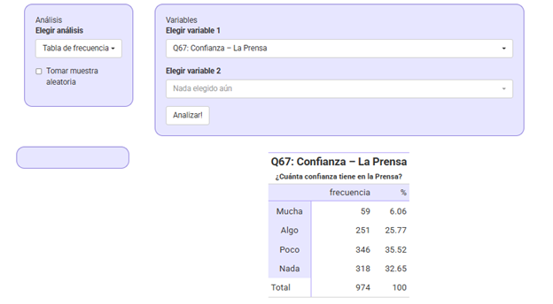
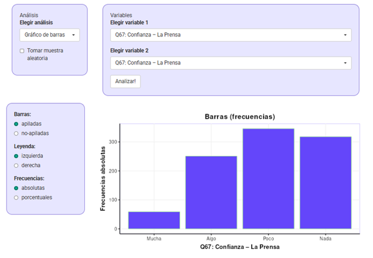
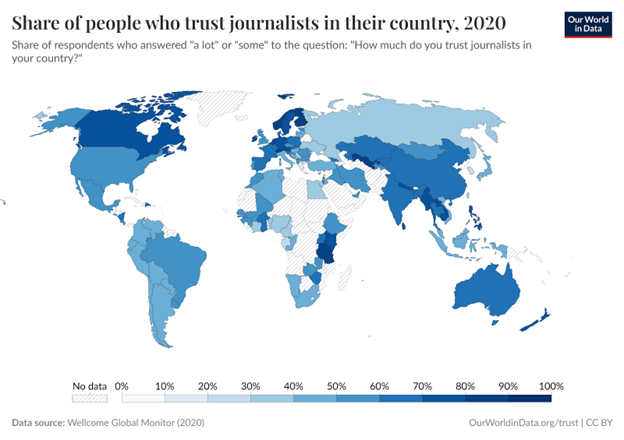
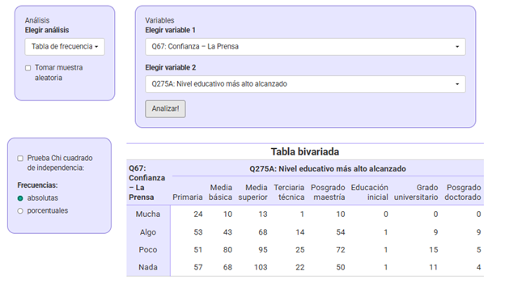
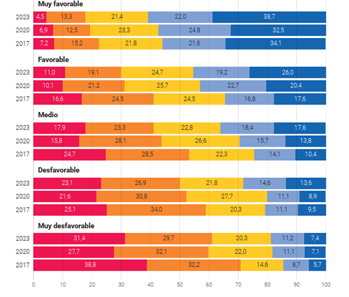
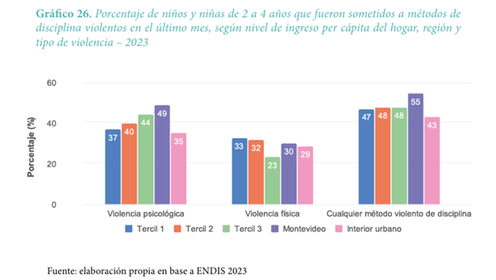

Práctico: Describir los datos - Tablas y gráficos de barras (S05)
5.1 Variables categóricas: tablas y gráficos de barra
Lectura asociada
Contenidos
Frecuencias absolutas, relativas y porcentuales. Frecuencia acumulada
Tablas de frecuencia
Tablas bivariadas
Gráficos de barras
Errores comunes en la interpretación: confundir proporciones absolutas y relativas, errores al leer el tipo de total (fila, columna o total general)
5.2 Los uruguayos y la confianza en las instituciones
Introducción
Imagina que accedemos a una muestra representativa de uruguayos adultos y les preguntamos los siguiente:
¿Cuánta confianza tiene en la prensa?
¿Cuánta confianza tiene en las iglesias?
¿Cuánta confianza tiene en los sindicatos?
¿Cuánta confianza tiene en la policía?
¿Cuánta confianza tiene en las organizaciones de mujeres?
¿Cuánta confianza tiene en las fuerzas armadas?
Si las opciones de respuesta son Nada, Poco, Algo o Mucha, ¿cómo crees que sería la distribución de respuestas para cada pregunta? Basado en los videos y el capítulo 3 del libro, selecciona una forma de representarlo.
Compara tu respuesta con la de tus compañeros
El primer paso: contar
Lo cierto es que estas preguntas forman parte de la Encuesta mundial de valores, una iniciativa internacional en la que participa Uruguay. Vamos a trabajar con los datos reales de esta encuesta, correspondientes a nuestro país.
Activa el botón Acerca de la base para conocer con mayor detalle de qué se trata.
Activa el botón Mostrar resumen. Identifica variables y niveles de las variables disponibles en la base de datos del panel.
Selecciona la variable categórica Confianza en la prensa.
- ¿Cuántas personas eligieron cada opción? ¿Cómo lo observaste? Encuentra formas alternativas de observar esto mismo.
¿Necesitás ayuda?
Elegir análisis > Tabla de frecuencias univariada > Elegir variable 1 (Confianza en la prensa) Puedes observar las frecuencias absolutas

Elegir análisis > Gráfico de barras > Elegir variable 1 (alguna categórica) > Frecuencias: absolutas

- ¿Qué parte del total eligió cada opción? ¿Cómo lo observaste? Encuentra formas alternativas de observar esto mismo.
¿Necesitás ayuda?
Elegir análisis > Tabla de frecuencias univariada > Elegir variable 1 (alguna categórica) Ahora puedes observar las frecuencias porcentuales
- Repite el procedimiento para las otras variables que refieren a la confianza en las instituciones (iglesias, sindicatos, policía, organizaciones de mujeres y fuerzas armadas) y compara la distribución de respuestas con tus hipótesis iniciales.
¿Cómo se sitúa la confianza en la prensa en Uruguay en relación a otros países del mundo?
Observa el siguiente gráfico basado en los datos de la Encuesta Mundial de Valores, en este caso con datos de 2020, extraído de la web Our World in Data.
Porcentaje de personas que confían en los periodistas en su país, 2020
Porcentaje de entrevistados que respondieron “mucho” y “algo” a la pregunta “¿Qué tanto confías en los periodistas de tu país?”
Accede al mapa interactivo aquí

¿De qué forma fueron calculadas las frecuencias? ¿Recuerdas qué nombre recibe ese tratamiento de las frecuencias?
¿Para qué otras variables de la base Encuesta Mundial de Valores tendría sentido calcular las frecuencias de ese modo?
5.3 Dos variables, una tabla
Hasta ahora venimos trabajando con una única variable a la vez. Demos un paso más: ahora nos interesa poner en relación dos variables categóricas.
Por ejemplo, vamos a poner en relación la variable Confianza en la prensa con otra variable (variable 2). En otras palabras, queremos ver cuántos casos caen simultáneamente en cada combinación posible de categorías.
- Selecciona otra variable (variable 2) que tenga sentido examinar en forma conjunta con la variable Confianza en la prensa.
¿Necesitás inspiración?
Por ejemplo, Confianza en la prensa y Nivel educativo En Uruguay, ¿el nivel educativo de las personas se asocia a su nivel de confianza en la prensa?
- Obtiene una tabla de frecuencia bivariada (absolutas). ¿Cuántas personas (casos) hay en cada cruce de categorías?
- Ahora, para la misma tabla bivariada modifica la opción Frecuencias para mostrar las Frecuencias porcentuales. Observa los cambios si los porcentajes están calculados por fila o por columna
- Formula 3 preguntas específicas que se podrían contestar a partir de la tabla (en función de la pregunta, considera si necesitas visualizar los totales por fila o por columna).
¿Necesitás ayuda?
Ejemplo de pregunta: Entre las personas que tienen mucha confianza en la prensa ¿Cuántas alcanzaron el nivel de Posgrado-Doctorado?

- Plantea hipótesis respecto a otros pares de variables. Realiza los análisis correspondientes en el panel de análisis y contrasta los resultados con tus hipótesis iniciales.
5.4 Los totales mandan
Ahora, manteniendo las mismas variables (variable 1: Confianza en la Prensa, variable 2: Nivel educativo), cambia la especificación del panel de Frecuencias absolutas a Frecuencias porcentuales. Puedes visualizar los porcentajes por filas o por columnas.
Qué forma es oportuna para responder la pregunta “¿De todas las personas cuyo máximo nivel educativo es Maestría, qué porcentaje tiene mucha confianza en la prensa?”
Qué forma es oportuna para responder la pregunta “¿De todas las personas que tienen mucha confianza en la prensa, qué porcentaje completó Maestría?”
Ahora vamos a visualizar estos mismos datos de forma gráfica. Busca una solución gráfica útil para responder la primera pregunta. Ahora intentalo para la segunda pregunta.
¿Necesitás ayuda?
Elegir análisis > Gráfico de barras > Elegir variable 1: Confianza en la Prensa, variable 2: Nivel educativo > Barras: apiladas > Frecuencias: porcentuales
Ahora invierte las variables 1 y 2 en el panel. Observa el nuevo gráfico.
5.5 ARISTAS - Desempeños en lectura en 3er año escolar
El siguiente gráfico fue trabajado en uno de los videos correspondientes a esta semana. El mismo fue extraído del informe de Aristas 2023, publicado por el Instituto Nacional de Evaluación Educativa.
Considerando que refiere a alumnos de tercer año escolar de Uruguay, y que las variables representadas son el Contexto socioeconómico y cultural del centro (niveles Muy favorable, Favorable, etc.) y Desempeño en lectura (Nivel 1, Nivel 2, etc.).
¿Qué título le darías al gráfico? ¿Cómo están expresadas las frecuencias? Recuerda explicitar si la representación fue realizada según contexto socioeconómico o según desempeño en lectura.
¿Qué afirmaciones puedes realizar a partir de las distribuciones observadas en el nivel socioeconómico y cultural Muy favorable y en el nivel Muy desfavorable?

5.6 ENDIS 2023 - Métodos de disciplina violentos
El siguiente gráfico forma parte de un informe del MIDES basado en la Encuesta de Nutrición Desarrollo Infantil y Salud (ENDIS) 2023, y representa la prevalencia de métodos de disciplina violentos, según características del hogar.

Este texto es una transcripción del informe, con algunas omisiones y modificaciones. Observa el gráfico y completa la información faltante en el texto.
En cuanto al nivel de ingresos del hogar, se observa que una proporción ____________ de niños y niñas fueron sometidos a métodos de disciplina que involucraban violencia física en los hogares de menor ingreso comparado con los de mayor ingreso ( ___ % en el tercil más bajo frente a ___ % en el más alto). Por el contrario, los niños y niñas en el tercil de ingresos _____________ fueron sometidos en mayor medida a la violencia psicológica ( ___ % frente a ___ % en el más bajo).
Por otro lado, en cuanto a la región del país, el porcentaje de niños y niñas que fueron sometidos a la violencia psicológica fue mayor en _____________ ( ___ %) que en _______ ( ___ %), mientras que no se observaron diferencias importantes en cuanto a la prevalencia de _____________.
5.7 Y para terminar, un par de ejercicios múltiple opción, como los del parcial
Usando el Panel de análisis de datos, empleando tablas de frecuencia bivariadas, indique la afirmación correcta para cada ejercicio.
A partir de la base de datos SERCE, cruce las variables Educación_Madre y Educación_Padre
- La mayoría de los estudiantes cuya madre tiene “Primaria” como mayor nivel educativo alcanzado, tienen padres con igual nivel educativo
- De entre aquellos cuya madre tiene “Primaria” como mayor nivel alcanzado, el 17.7 % tiene padre con nivel “Secundaria”
- Un 69.1 % de los estudiantes tiene padre y madre con nivel de educación universitaria
- Un 34.2 % de los estudiantes tiene madre con estudios universitarios y padre con ‘Primaria’ como mayor nivel educativo alcanzado
A partir de la base de datos SERCE, cruce las variables Vives_Madre y Vives_Padre
- El 97.5 % de los estudiantes vive con ambos padre y madre
- De aquellos estudiantes que NO viven con su padre, el 26 % vive con su madre
- De aquellos estudiantes que SÍ viven con su padre, el 2,4 % NO viven con su madre
- El 26 % de los estudiantes NO vive con el padre y SÍ viven con la madre
A partir de la base de datos Encuesta Nacional de Psicólogos, cruce las variables Vivienda_Ud_es y Estado_conyugal
- El 9.5 % de los psicólogos que se encuentran en una unión libre es miembro de una cooperativa de ayuda mutua
- El 0.3 % de los que son inquilinos o arrendatarios se encuentran solteros
- El 44.1 % de los psicólogos casados son propietarios y ya pagaron la vivienda
- El 22.2 % de los propietarios que están pagando su vivienda son viudos
A partir de la base de datos Encuesta Nacional de Psicólogos, cruce las variables Sexo y Nro_trabajos
- El 75 % de las psicólogas reporta tener 5 trabajos
- El 3.0 % de las psicólogas y el 1.8 % de los psicólogos reportan tener 4 o más trabajos
- El 19.1 % de los psicólogos reporta tener 2 trabajos
- La mayoría de los psicólogos y psicólogas reporta tener 3 trabajos o más
En la base Aristas, observa las variables ESCS_Alumno_cat y Niveles_MAT a partir de un gráfico de barras apiladas
- No se observa relación entre el desempeño en matemática y Estatus socioeconómico y cultural del estudiante
- La mayoría de los estudiantes que integran el quintil 1 de estatus socioeconómico y cultural tienen niveles de desempeño en matemática menores o iguales a N2
- La mayoría de los estudiantes que integran el quintil 3 de estatus socioeconómico y cultural tienen niveles de desempeño en matemática menores o iguales a N2
- La mayoría de los estudiantes con desempeño en matemática N3 pertenecen al quintil 3 de estatus socioeconómico y cultural